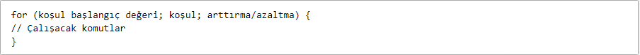
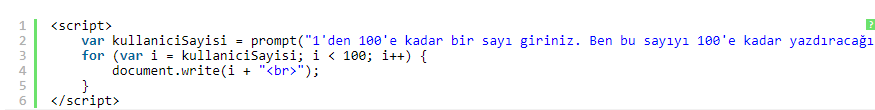
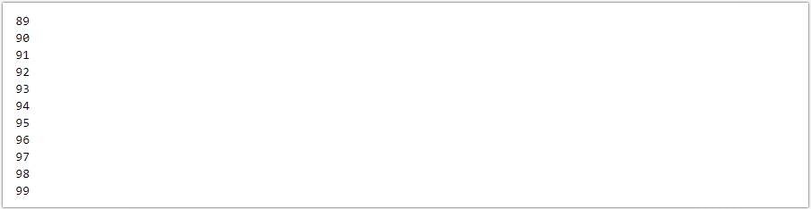
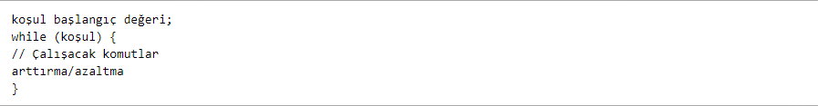
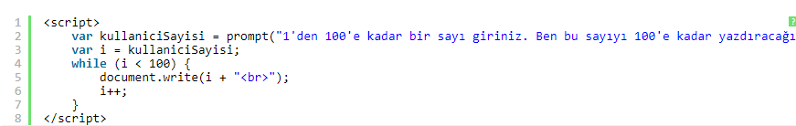
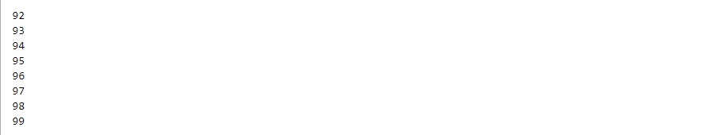
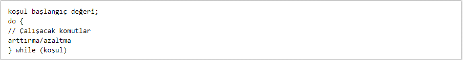
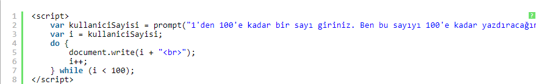
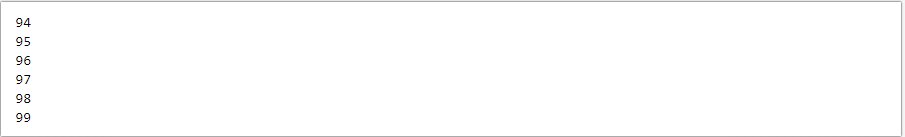

JavaScript'teki döngü ifadeleri aşağıdaki şekilde listelenmiştir:
Programlamanın olmazsa olmazlarıdır. Bir komut bloğunu birden çok kez çalıştırmak için kullanılırlar. Örneğin; ekranımıza 1'den 100'e kadar sayı yazdırmak istiyoruz. Bunun için yüz kere document.write(n) ifadesini yazmayız. Burada devreye döngüler girer.
En çok kullanılan döngüdür. Bir değişken için tanımladığımız koşul içindeki komutlar döngü tamamlanıncaya kadar çalışır.
Şeklinde algoritması vardır. Şimdi bu algoritmanın nasıl çalıştığını bir örnek ile özetleyelim.
Şeklinde bir döngümüz olsun. Kullanıcı sayısını i değişkenine atadık. i ise 100'e kadar birer birer artacak. Yazdırırken ise
etiketi ile bunu alt alta yazdıracağız.
Kodlarımı çalıştırdım ve örnek olarak "89" sayısını girdim.
for döngüsü ile aynı işlemleri yapar. Birkaç küçük sözdizimi farkı vardır. Değişken döngüden önce tanımlanır. Parantez içerisine sadece koşul yazılır ve arttırma/azaltma işlemleri yazdırma işleminden sonra yapılır.
Şeklinde bir algoritması vardır. Şimdi aynı örneğimizi while döngüsü ile yapalım.
Bu sefer kullanıcı sayısını "i" değişkenime aktardım. Daha sonra döngümü yazdım. Dikkat ederseniz arttırma işlemini yazdırdıktan sonra yapıyorum. Test amacıyla "92" değerini girdim.
Ekran çıktım bu şekilde olacaktır.
while döngüsüne çok benzer. Tek farkı koşul doğru olsun ya da olmasın döngü içersindeki komutların en az bir defa çalıştırılmasıdır
Şeklinde bir söz dizimi vardır. Şimdi aynı örneğimizi do ... while ile yapalım.
Kodlarımı çalıştırıyorum. Bu sefer "94" değerini girdim.
Çıktımız ise bu şekilde olacaktır./